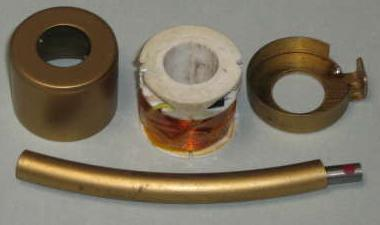

|
|
| Elliott Sound Products | Kundo Electronique Motor Repair |
Rod Elliott
Page Created 04 June 2007
The first article in the new horology section of the site describes the repair of a Kundo (Kieninger and Obergfell) electronically switched electro-mechanical clock.
To the left is the circuit diagram and the movement of a typical Kundo electric (Electronique) clock is shown on the right. These clocks use a pendulum that is kicked into continuous oscillation by a very simple circuit. The basic schematic is shown, but note that there are many variations. The circuit shown is the modified version I used after repairing the "motor". Because the transistor used is NPN (almost all germanium transistors are PNP), the battery voltage is reversed from the original. These clocks always used a germanium transistor, and it is thought by many that silicon transistors simply won't work.
This is not necessarily true, as I have replaced the germanium transistor with silicon in the once faulty Kundo movement, and it works just fine. Unfortunately, the original coil was open circuit as well, so the clock required a complete rewind of the coil. This is not a fun job with 0.0635mm wire (#42 AWG/B&S), as the wire is so fine that it is difficult to avoid breakage - especially with several thousand turns. Nevertheless, the movement (pictured on the right) now works very well, and only awaits a case, face and hands (all of which were missing when I acquired it ... the hands you see are only temporary!). Although the original did indeed use a germanium transistor, I replaced it with a BC549 silicon device after rewinding the coils - mainly to find out if it would work. Although fitting the circuitry is fiddly, I did try an AC128 germanium transistor - bad move! As I discovered (after reassembling the motor), the cases of the AC128 transistors are steel (not aluminium as I had assumed) and are magnetic. This causes the pendulum to deflect alarmingly. The original transistor used a black painted glass case - these were common in the early days of English and European transistors.
Interestingly, the circuit actually does work better with a germanium transistor (ignoring the pendulum deflection which makes it unusable), but I don't have any of the old glass case types (such as the original TF65 pictured), so I reverted to the silicon device.
Since the movement is a 6 jewel type and is of good quality, it is actually worth the effort of restoring it IMHO.
These clocks are real power misers - at least with a silicon transistor. The impulse duration of the silicon transistor version is only 78ms, and with a peak current of 1.7mA, the average current drain is less than 200uA. the power is approximately 300uW ... yes, microwatts. The pendulum rate is 3 beats/second (1.5 complete swings per second). The pendulum is pulsed once per complete swing (every 667ms). The actual direction where the pendulum is pulsed depends on the coil and magnet directions - it may occur on either left-to-right or right-to-left swings. A magnet is buried inside the curved section of the pendulum, and that induces a tiny current into the base of the transistor via the outer coil. Once the transistor draws collector current (the red dot shows the collector), the current in the inner coil induces more current into the outer coil (connected to the base), turning the transistor on more. This continues until the current can increase no further, at which point the transistor turns off completely (and rather abruptly - the 5.1k resistor is fitted to limit the maximum voltage swing which can easily reach 20 or 30 Volts). The impulse repels the magnet, pushing it away.
|  Clock Motor Components |
Coil Bobbin Detail |
Transistor Installed |
Above, you can see the components of the clock's motor system. The curved section of the pendulum houses a magnet (seen peeping out from the right side). The coil bobbin holds the circuitry and the coils. The coil itself is seen in the centre image. I colour coded the wires when I rewound the coil so I'd know which lead went where. Unfortunately, the thinnest coloured wire I had available is still much too thick, but it works.
The transistor mounting is shown on the right. The hole is designed to take a germanium device (same diameter, but much longer than the silicon transistor used). Wiring is laid along the channels in the bobbin, and there is actually plenty of room. The 5.1k resistor isn't shown, but it is tucked into a relatively large cavity in the bobbin. Almost a year after having repaired the motor, as you can see I haven't progressed very far, and had forgotten the exact wiring (the circuit is so simple, of course I'll remember it ... or so I though at the time).
Power is transferred to the movement by means of a tiny pawl that is connected to the pendulum, and this drives a ratchet wheel with a detent to prevent it from turning backwards as the pawl moves from left to right. A photo of a (different) Kundo drive is shown on the left. Unlike a traditional weight or spring driven movement, the motion is geared down by the motion train, with each successive wheel turning slower than the one driving it. Only a tiny amount of the pendulum's energy is lost at each right-to-left swing, so the electric "motor" unit only needs to replace that amount of energy to keep the clock running. No power switch is provided or needed. Simply locking the pendulum in place prevents the battery from being discharged, since the circuit needs the magnetic impulse to do anything at all (although this may not be the case with a germanium transistor, because they have relatively high leakage).
A small amount of damping is commonly provided to prevent excessive pendulum over-swing. This uses a brass ring (the mounting bracket for the coil, and the centre brass sleeve inside the coil bobbin), which forms a shorted turn for the magnet as it passes through. Unfortunately, the centre sleeve of the repaired coil assembly had been damaged before I got to it, so it is incomplete - hence, the system presently does have a bit more power than is needed (all 300uW of it).
It is generally recognised that a pendulum should be driven when at the centre of its swing (when vertical and at maximum velocity) for best timekeeping, and the Kundo style of motor does this quite well. The drive is delivered as the (inner) end of the magnet passes through the coil, and it is quite close to the centre of the curved bar. Timekeeping seems to be quite good once the clock is regulated properly.
I have since had to perform another coil rewind on another Kundo clock using the same motor unit. This time, I used the counter on my coil winder to count the number of turns. The base (sensing) coil has 5,000 turns, and the collector (power) winding has 3,000 turns (give or take a few). The second repaired unit uses the original TF65 germanium transistor, and refused to work with silicon. The only real difference is the magnet strength - the first one I did has a much stronger magnet, although in theory, the second one should have worked with a silicon device regardless.
One thing that I was able to do this time was determine the likely cause of the coil failure. With such a small amount of power, these coils should last forever, but this is obviously not the case. It looks like the insulation for the coil termination wires leaches some chemical that attacks the wiring. There were several patches of green gunge on the windings, right next to where there was contact with the insulation. Unfortunately, any break that occurs will never be where you can get to it, so this makes it necessary to just remove the old coils completely and start again. With both motors, I attempted to remove just the outer (faulty) winding, but damage to the inner winding seems inevitable in the process.
A significant part of the problem with the silicon transistor is that silicon has a "barrier" voltage of nominally 0.65V, whereas that of germanium is around 0.3V. Silicon also has a negative temperature coefficient (about 2mV / degree C), so when the weather gets cold the clock with the silicon transistor simply stops. There is an alternative motor design that needs a bit more work, but will be published here when complete. It has the advantage of using readily available silicon transistors, and the electronics mounts outside the coil housing.
Only one winding is used, so only two wires are needed from the coil housing. A circuit that is similar to the one I'm working is shown in the "free pendulum clock" article, but there are a few minor changes needed as the motor is much too powerful for the Kundo clock, and must be tamed. This must be done in a way that gives consistent results, yet uses a very simple design so it's easy to build without a printed circuit board. This is a challenge as it transpires, but I know it can be done.
Please Note: I have been advised that some of the early PVC insulation contained plasticisers that may have used PCBs (polychlorinated biphenyls), and that the green gunge referred to above may contain some of this toxic and carcinogenic material. Care is advised - wear disposable gloves and do not attempt to solder through the gunge. In quantity, waste material should be disposed of at an approved toxic waste handling centre, however this might be overkill for a few micrograms of material. Ensure that the waste material is well wrapped before disposal.